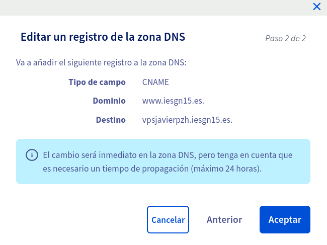

Instalación de un servidor LEMP
Esta tarea la vamos a realizar sobre el servidor OVH
En esta práctica vamos a montar un servidor LEMP, que hace referencia a:
-
Linux, el sistema operativo
-
(E) Nginx, el servidor web
-
MySQL/MariaDB, el gestor de bases de datos
-
PHP, el lenguaje de programación
1. Instala un servidor web nginx
Antes de proceder a instalar algún paquete cuando creamos una nueva máquina, en este caso una instancia, es muy recomendable actualizar el estado de la máquina, ya que generalmente estamos utilizando imágenes que puede que estén desactualizadas, por tanto, vamos a realizar una actualización de nuestros repositorios y paquetes, y vamos a deshacernos de todo aquello que ya no nos sea necesario:
apt update && apt upgrade -y && apt autoremove -y && apt autoclean
Ahora sí instalamos el podemos instalar el paquete de Nginx:
apt update && apt install nginx -y
2. Instala un servidor de base de datos MariaDB. Ejecuta el programa necesario para asegurar el servicio, ya que lo vamos a tener corriendo en el entorno de producción.
Para instalar un servidor de base de datos MySQL o MariaDB, debemos instalar los siguientes paquetes:
apt install mariadb-server mariadb-client -y
Una vez lo hemos instalado, vamos a configurar una serie de opciones con el comando mysql_secure_installation. Vamos a especificarle una contraseña de root, vamos a eliminar los usuarios anónimos, vamos a desactivar el acceso remoto a la base de datos, en resumen, vamos a restablecer la base de datos, con nuestras preferencias. Esta es una manera de asegurar el servicio. Aquí muestro el proceso:
root@vpsjavierpzh:~# mysql_secure_installation
NOTE: RUNNING ALL PARTS OF THIS SCRIPT IS RECOMMENDED FOR ALL MariaDB
SERVERS IN PRODUCTION USE! PLEASE READ EACH STEP CAREFULLY!
In order to log into MariaDB to secure it, we'll need the current
password for the root user. If you've just installed MariaDB, and
you haven't set the root password yet, the password will be blank,
so you should just press enter here.
Enter current password for root (enter for none):
OK, successfully used password, moving on...
Setting the root password ensures that nobody can log into the MariaDB
root user without the proper authorisation.
You already have a root password set, so you can safely answer 'n'.
Change the root password? [Y/n] Y
New password:
Re-enter new password:
Password updated successfully!
Reloading privilege tables..
... Success!
By default, a MariaDB installation has an anonymous user, allowing anyone
to log into MariaDB without having to have a user account created for
them. This is intended only for testing, and to make the installation
go a bit smoother. You should remove them before moving into a
production environment.
Remove anonymous users? [Y/n] Y
... Success!
Normally, root should only be allowed to connect from 'localhost'. This
ensures that someone cannot guess at the root password from the network.
Disallow root login remotely? [Y/n] Y
... Success!
By default, MariaDB comes with a database named 'test' that anyone can
access. This is also intended only for testing, and should be removed
before moving into a production environment.
Remove test database and access to it? [Y/n] Y
- Dropping test database...
... Success!
- Removing privileges on test database...
... Success!
Reloading the privilege tables will ensure that all changes made so far
will take effect immediately.
Reload privilege tables now? [Y/n] Y
... Success!
Cleaning up...
All done! If you've completed all of the above steps, your MariaDB
installation should now be secure.
Thanks for using MariaDB!
Ya tendríamos instalado nuestro servidor de base de datos MySQL y asegurado correctamente.
3. Instala un servidor de aplicaciones php php-fpm.
Para instalar un servidor de aplicaciones PHP, debemos instalar los siguientes paquetes:
apt install php php-fpm -y
Ya tendríamos instalado nuestro servidor de aplicaciones PHP.
4. Crea un virtualhost al que vamos acceder con el nombre www.iesgnXX.es. Recuerda que tendrás que crear un registro CNAME en la zona DNS.
Vamos a crear un nuevo sitio web al que se accederá mediante la dirección www.iesgn15.es. Antes de empezar la configuración de Nginx, vamos a añadir un registro CNAME en nuestra nuestra zona DNS de OVH.
Para realizar este paso, nos dirigimos a nuestra zona DNS de OVH:

Una vez aquí, antes de crear el nuevo registro tenemos que eliminar el registro existente que hace uso del subdominio www.iesgn15.es. Este registro no lo he creado yo, sino que venía por defecto, y además es un registro de tipo TXT, es decir que no es importante y no afectará a ningún servicio, por tanto lo eliminamos:

Una vez tenemos el subdominio que queremos libre y utilizable, procedemos a crear el nuevo registro como se puede ver en la siguiente imagen:

Vemos como nos avisa que vamos a crear un registro de tipo CNAME, cuyo dominio será www.iesgn15.es y su destino va a ser vpsjavierpzh.iesgn15.es.. Es importante no olvidar este último punto final si queremos utilizar la notación absoluta. Este destino que hemos añadido, correspondería a la dirección IP del servidor, lo que pasa es que en mi servidor tengo creado un registro de tipo A que apunta a esta dirección IP, por tanto hago uso de este registro.

Ya hemos creado el nuevo registro:

Una vez hemos realizado las modificaciones necesarias en la configuración del servidor, podemos pasar a configurar Nginx.
Creamos el virtualhost en /srv/www/aplicacionesiesgn:
root@vpsjavierpzh:/srv# mkdir www root@vpsjavierpzh:/srv# cd www/ root@vpsjavierpzh:/srv/www# mkdir aplicacionesiesgn
Creamos el fichero de configuración de la nueva web que vamos a crear:
root@vpsjavierpzh:/etc/nginx/sites-available# nano aplicacionesiesgn.conf
Y dentro escribimos las siguientes líneas:
server {
listen 80;
listen [::]:80;
root /srv/www/aplicacionesiesgn;
index index.html index.htm index.nginx-debian.html;
server_name www.iesgn15.es;
location / {
try_files $uri $uri/ =404;
}
}
Creamos un enlace simbólico de este fichero a la ruta sites-enabled para que nos sirva la nueva web.
ln -s /etc/nginx/sites-available/aplicacionesiesgn.conf /etc/nginx/sites-enabled/
Vemos que nos lo ha creado bien:
root@vpsjavierpzh:/etc/nginx/sites-available# ls -l /etc/nginx/sites-enabled/ total 0 lrwxrwxrwx 1 root root 49 Nov 9 18:44 aplicacionesiesgn.conf -> /etc/nginx/sites-available/aplicacionesiesgn.conf lrwxrwxrwx 1 root root 34 Nov 9 12:09 default -> /etc/nginx/sites-available/default
5. Cuando se acceda al virtualhost por defecto default nos tiene que redirigir al virtualhost que hemos creado en el punto anterior.
Creamos la redirección permanente del virtualhost por defecto a este nuevo virtualhost. Para ello en el fichero de configuración del virtualhost por defecto, que es /etc/nginx/sites-available/default, añadimos la siguiente línea:
rewrite ^/$ /srv/www/aplicacionesiesgn permanent;
6. Cuando se acceda a www.iesgnXX.es se nos redigirá a la página www.iesgnXX.es/principal
Creamos la redirección permanente de www.iesgn15.es a www.iesgn15.es/principal. Para hacer este cambio, al igual que en el paso anterior, pero esta vez en el fichero de configuración /etc/nginx/sites-available/aplicacionesiesgn.conf añadimos la siguiente línea:
rewrite ^/$ /principal permanent;
Queda así:
server {
listen 80;
listen [::]:80;
root /srv/www/aplicacionesiesgn;
index index.html index.htm index.nginx-debian.html;
server_name www.iesgn15.es;
rewrite ^/$ /principal permanent;
location / {
try_files $uri $uri/ =404;
}
}
Reiniciamos el servicio:
systemctl restart nginx
7. En la página www.iesgnXX.es/principal se debe mostrar una página web estática (utiliza alguna plantilla para que tenga hoja de estilo). En esta página debe aparecer tu nombre, y una lista de enlaces a las aplicaciones que vamos a ir desplegando posteriormente.
Hay muchas webs que nos ofrecen plantillas html5 para descargarnos. Yo he utilizado mashup-template. He decido descargarme esta plantilla en concreto. Vamos a realizar la descarga en nuestro directorio creado para la web:
root@vpsjavierpzh:/srv/www/aplicacionesiesgn# wget http://www.mashup-template.com/assets/energy/energy-html.zip --2020-11-09 19:15:32-- http://www.mashup-template.com/assets/energy/energy-html.zip Resolving www.mashup-template.com (www.mashup-template.com)... 54.229.8.122, 34.253.22.180, 52.208.164.194, ... Connecting to www.mashup-template.com (www.mashup-template.com)|54.229.8.122|:80... connected. HTTP request sent, awaiting response... 200 OK Length: 838261 (819K) [application/zip] Saving to: ‘energy-html.zip’ energy-html.zip 100%[=====================================>] 818.61K --.-KB/s in 0.1s 2020-11-09 19:15:33 (7.50 MB/s) - ‘energy-html.zip’ saved [838261/838261]
apt install zip -y
root@vpsjavierpzh:/srv/www/aplicacionesiesgn# unzip energy-html.zip Archive: energy-html.zip creating: energy/ creating: energy/assets/ inflating: energy/assets/apple-icon-180x180.png creating: energy/assets/images/ inflating: energy/assets/images/img-01.jpg inflating: energy/assets/images/img-02.jpg inflating: energy/assets/images/img-03.jpg inflating: energy/assets/images/img-04.jpg inflating: energy/assets/images/img-05.jpg inflating: energy/assets/images/img-06.jpg inflating: energy/assets/images/img-08.jpg inflating: energy/assets/images/mashup-icon.svg inflating: energy/components.html inflating: energy/index.html inflating: energy/main.bc58148c.js inflating: energy/main.bc58148c.js.gz inflating: energy/main.bc58148c.map inflating: energy/main.d8e0d294.css inflating: energy/main.d8e0d294.css.gz creating: energy/sample/ inflating: energy/sample/sample-page.html root@vpsjavierpzh:/srv/www/aplicacionesiesgn# ls energy energy-html.zip root@vpsjavierpzh:/srv/www/aplicacionesiesgn# rm energy-html.zip root@vpsjavierpzh:/srv/www/aplicacionesiesgn# mv energy/* ./ root@vpsjavierpzh:/srv/www/aplicacionesiesgn# ls assets energy main.bc58148c.js main.bc58148c.map main.d8e0d294.css.gz components.html index.html main.bc58148c.js.gz main.d8e0d294.css sample
Edito el index.html:
root@vpsjavierpzh:/srv/www/aplicacionesiesgn# nano index.html
chown -R www-data:www-data /srv/
Accedo a la página
8. Configura el nuevo virtualhost, para que pueda ejecutar PHP. Determina que configuración tiene por defecto php-fpm (socket unix o socket TCP) para configurar nginx de forma adecuada.
apt install php-mysql -y
Buscamos en /etc/php/7.3/fpm/php.ini:
;cgi.discard_path=1
Sustituimos por:
cgi.fix_pathinfo=0
Reiniciamos el servicio:
systemctl restart php7.3-fpm
Configuración Nginx para PHP:
/etc/nginx/sites-available/aplicacionesiesgn.conf:
server {
listen 80;
listen [::]:80;
root /srv/www/aplicacionesiesgn;
index index.php index.html index.htm index.nginx-debian.html;
server_name www.iesgn15.es;
rewrite ^/$ /principal permanent;
location / {
try_files $uri $uri/ =404;
}
location ~ \.php$ {
include snippets/fastcgi-php.conf;
fastcgi_pass unix:/run/php/php7.3-fpm.sock;
}
}
Vemos los cambios que hemos introducido:
-
Agregamos
index.phpcomo primer valor de nuestra directiva índice. -
Agregamos un bloque que se va a encargar de descomentar las líneas include y fastcgi_pass de todos los ficheros .php. Esto es necesario para llevar a cabo el procesamiento real de PHP, ya que estas líneas manejan las solicitudes PHP.
Reiniciamos el servicio:
systemctl restart nginx
9. Crea un fichero info.php que demuestre que está funcionando el servidor LEMP.
root@vpsjavierpzh:/srv/www/aplicacionesiesgn# nano info.php
Escribimos dentro: <?php phpinfo(); ?>.
chown -R www-data:www-data /srv/